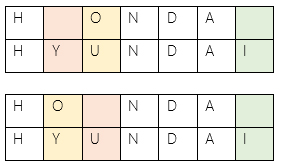

Dr. Vladimir I. Levenshtein
Interpretation by Jan @Novoj Novotný
Compute minimal set of operations to apply on left tree to get to the structure of the right one.
Levenshtein distance is a string metric for measuring the difference between two sequences. Informally, the Levenshtein distance between two words is the minimum number of single-character edits required to change one word into the other. It is named after the Soviet mathematician Vladimir Levenshtein, who considered this distance in 1965.
Allowed operations:
|
Example:Levenshtein distance here is 3 |
A A( B C C( D D( E F )D )C G H )A I I( J )I
 |
 Algorithm uses stack of operations instead of plain numbers. Imagine that under the number 3 is following stack of operations:
|
And finally apply modification recipe applied on source tree.
Conflicts may still occur.
Sources:
Contact me @Novoj or novotnaci@gmail.com